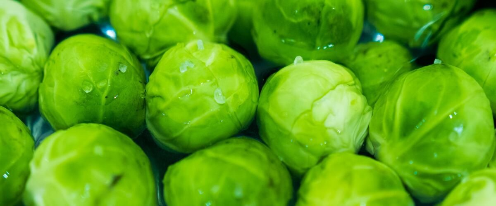
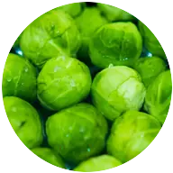

When to plant Brussels sprouts in Oregon and Washington
In Portland: Start Brussels sprouts from seed indoors Jan 18 – Feb 1, then plant the young plants in the garden Mar 15 – Apr 26. In Bend: May 12 – Jun 23. Find your city below.
- Difficulty
- Moderate
- Sun
- Full sun
- Spacing
- 24 inches apart
- Planting depth
- Plant starts at the depth they grew in the pot
- Frost
- Handles light frost
- First harvest
- About 100 days after planting
A long-season crop picked in fall and winter, when frost sweetens the sprouts. West of the Cascades, plants keep producing well into winter.
Brussels sprouts planting dates
| City | Start seeds indoors | Plant in the garden |
|---|---|---|
| Portland, OR | Jan 18 – Feb 1 | Mar 15 – Apr 26 |
| Seattle and Tacoma, WA | Jan 18 – Feb 1 | Mar 15 – Apr 26 |
| Eugene, OR | Jan 18 – Feb 1 | Mar 15 – Apr 26 |
| Spokane, WA | Feb 18 – Mar 4 | Apr 15 – May 27 |
| Bend and Redmond, OR | Mar 17–31 | May 12 – Jun 23 |
| Tri-Cities (Pasco, Kennewick, Richland), WA | Feb 4–18 | Apr 1 – May 13 |
Find your town
Portland area, OR 6 towns
| City | Start seeds indoors | Plant in the garden |
|---|---|---|
| Gresham, OR | Jan 18 – Feb 1 | Mar 15 – Apr 26 |
| Hillsboro and Beaverton, OR | Jan 22 – Feb 5 | Mar 19 – Apr 30 |
| Oregon City and West Linn, OR | Jan 18 – Feb 1 | Mar 15 – Apr 26 |
| Portland, OR | Jan 18 – Feb 1 | Mar 15 – Apr 26 |
| St. Helens and Scappoose, OR | Jan 18 – Feb 1 | Mar 15 – Apr 26 |
| Wilsonville and Canby, OR | Jan 18 – Feb 1 | Mar 15 – Apr 26 |
Willamette Valley, OR 5 towns
| City | Start seeds indoors | Plant in the garden |
|---|---|---|
| Corvallis and Albany, OR | Jan 18 – Feb 1 | Mar 15 – Apr 26 |
| Cottage Grove, OR | Jan 30 – Feb 13 | Mar 27 – May 8 |
| Eugene, OR | Jan 18 – Feb 1 | Mar 15 – Apr 26 |
| McMinnville and Newberg, OR | Jan 21 – Feb 4 | Mar 18 – Apr 29 |
| Salem, OR | Jan 18 – Feb 1 | Mar 15 – Apr 26 |
Southern Oregon, OR 4 towns
| City | Start seeds indoors | Plant in the garden |
|---|---|---|
| Ashland and Talent, OR | Feb 11–25 | Apr 8 – May 20 |
| Grants Pass, OR | Jan 18 – Feb 1 | Mar 15 – Apr 26 |
| Medford, OR | Jan 18 – Feb 1 | Mar 15 – Apr 26 |
| Roseburg, OR | Jan 18 – Feb 1 | Mar 15 – Apr 26 |
Oregon Coast, OR 5 towns
| City | Start seeds indoors | Plant in the garden |
|---|---|---|
| Astoria, OR | Feb 4–18 | Apr 1 – May 13 |
| Brookings and Gold Beach, OR | Feb 4–18 | Apr 1 – May 13 |
| Coos Bay and North Bend, OR | Feb 4–18 | Apr 1 – May 13 |
| Newport and Lincoln City, OR | Feb 4–18 | Apr 1 – May 13 |
| Tillamook, OR | Feb 4–18 | Apr 1 – May 13 |
Central Oregon and the high desert, OR 6 towns
| City | Start seeds indoors | Plant in the garden |
|---|---|---|
| Bend and Redmond, OR | Mar 17–31 | May 12 – Jun 23 |
| Burns, OR | Mar 19 – Apr 2 | May 14 – Jun 25 |
| Klamath Falls, OR | Mar 17–31 | May 12 – Jun 23 |
| Lakeview, OR | Mar 12–26 | May 7 – Jun 18 |
| Madras, OR | Feb 24 – Mar 10 | Apr 21 – Jun 2 |
| Prineville, OR | Mar 9–23 | May 4 – Jun 15 |
Columbia Gorge and eastern Oregon, OR 9 towns
| City | Start seeds indoors | Plant in the garden |
|---|---|---|
| Baker City, OR | Mar 2–16 | Apr 27 – Jun 8 |
| Enterprise and Joseph, OR | Mar 1–15 | Apr 26 – Jun 7 |
| Hermiston, OR | Feb 4–18 | Apr 1 – May 13 |
| Hood River, OR | Feb 4–18 | Apr 1 – May 13 |
| John Day, OR | Mar 5–19 | Apr 30 – Jun 11 |
| La Grande, OR | Feb 18 – Mar 4 | Apr 15 – May 27 |
| Ontario, OR | Feb 4–18 | Apr 1 – May 13 |
| Pendleton, OR | Feb 4–18 | Apr 1 – May 13 |
| The Dalles, OR | Feb 4–18 | Apr 1 – May 13 |
Seattle and Puget Sound, WA 6 towns
| City | Start seeds indoors | Plant in the garden |
|---|---|---|
| Bremerton and Port Orchard, WA | Jan 18 – Feb 1 | Mar 15 – Apr 26 |
| Everett, WA | Jan 18 – Feb 1 | Mar 15 – Apr 26 |
| Kent, Renton and Auburn, WA | Jan 18 – Feb 1 | Mar 15 – Apr 26 |
| Olympia, WA | Feb 4–18 | Apr 1 – May 13 |
| Seattle and Tacoma, WA | Jan 18 – Feb 1 | Mar 15 – Apr 26 |
| Shelton, WA | Feb 2–16 | Mar 30 – May 11 |
North Sound and the islands, WA 5 towns
| City | Start seeds indoors | Plant in the garden |
|---|---|---|
| Anacortes, WA | Jan 18 – Feb 1 | Mar 15 – Apr 26 |
| Bellingham, WA | Jan 18 – Feb 1 | Mar 15 – Apr 26 |
| Friday Harbor and the San Juans, WA | Jan 18 – Feb 1 | Mar 15 – Apr 26 |
| Mount Vernon and Burlington, WA | Jan 18 – Feb 1 | Mar 15 – Apr 26 |
| Oak Harbor and Whidbey Island, WA | Jan 18 – Feb 1 | Mar 15 – Apr 26 |
Olympic Peninsula and coast, WA 6 towns
| City | Start seeds indoors | Plant in the garden |
|---|---|---|
| Aberdeen and Hoquiam, WA | Feb 4–18 | Apr 1 – May 13 |
| Forks, WA | Feb 4–18 | Apr 1 – May 13 |
| Long Beach and Ilwaco, WA | Feb 4–18 | Apr 1 – May 13 |
| Port Angeles, WA | Jan 18 – Feb 1 | Mar 15 – Apr 26 |
| Port Townsend, WA | Jan 18 – Feb 1 | Mar 15 – Apr 26 |
| Sequim, WA | Jan 27 – Feb 10 | Mar 24 – May 5 |
Southwest Washington, WA 3 towns
| City | Start seeds indoors | Plant in the garden |
|---|---|---|
| Centralia and Chehalis, WA | Jan 28 – Feb 11 | Mar 25 – May 6 |
| Longview and Kelso, WA | Jan 18 – Feb 1 | Mar 15 – Apr 26 |
| Vancouver, WA | Jan 18 – Feb 1 | Mar 15 – Apr 26 |
Wenatchee and the Okanogan, WA 5 towns
| City | Start seeds indoors | Plant in the garden |
|---|---|---|
| Chelan, WA | Feb 4–18 | Apr 1 – May 13 |
| Leavenworth, WA | Feb 18 – Mar 4 | Apr 15 – May 27 |
| Omak and Okanogan, WA | Feb 18 – Mar 4 | Apr 15 – May 27 |
| Wenatchee, WA | Feb 4–18 | Apr 1 – May 13 |
| Winthrop and Twisp, WA | Feb 20 – Mar 6 | Apr 17 – May 29 |
Yakima Valley and Columbia Basin, WA 8 towns
| City | Start seeds indoors | Plant in the garden |
|---|---|---|
| Ellensburg, WA | Feb 18 – Mar 4 | Apr 15 – May 27 |
| Ephrata and Quincy, WA | Feb 4–18 | Apr 1 – May 13 |
| Goldendale, WA | Feb 24 – Mar 10 | Apr 21 – Jun 2 |
| Moses Lake, WA | Feb 4–18 | Apr 1 – May 13 |
| Sunnyside, Grandview and Prosser, WA | Feb 6–20 | Apr 3 – May 15 |
| Tri-Cities (Pasco, Kennewick, Richland), WA | Feb 4–18 | Apr 1 – May 13 |
| Walla Walla, WA | Feb 4–18 | Apr 1 – May 13 |
| Yakima, WA | Feb 13–27 | Apr 10 – May 22 |
Spokane and eastern Washington, WA 3 towns
| City | Start seeds indoors | Plant in the garden |
|---|---|---|
| Colville, WA | Feb 18 – Mar 4 | Apr 15 – May 27 |
| Pullman, WA | Feb 18 – Mar 4 | Apr 15 – May 27 |
| Spokane, WA | Feb 18 – Mar 4 | Apr 15 – May 27 |
How to grow Brussels sprouts
- Start seeds indoors on your city's dates in trays or small pots under a grow light or in your sunniest window. Or skip this step and buy young plants (starts) at a garden center.
- Harden off the young plants: about a week before planting, set them outside for a few hours a day, a little longer each day.
- Plant them in the garden on your city's dates, 24 inches apart. Plant starts at the depth they grew in the pot.
- Water deeply once or twice a week rather than a little every day, and mulch once the soil is warm.
- Harvest: Pick sprouts from the bottom of the stalk up once they're firm and about an inch across. Frost improves the flavor.
Popular Brussels sprouts varieties
Widely sold picks that do well somewhere in Oregon or Washington. The tag says which side of the mountains suits each one best.
Long Island Improved
The classic heirloom on compact plants about 2 feet tall. Yields are modest compared with hybrids, but it is hardy, inexpensive and sweetens nicely after frost.
Both sides
Diablo
Tall, sturdy plants with heavy yields of large, smooth sprouts. A late variety that holds well in the garden for fall and early winter picking.
Both sides
Churchill
Early and adaptable, with uniform, sweet, medium sprouts. A good pick where fall arrives quickly, and it handles a range of weather well.
Both sides
Jade Cross
An award-winning hybrid known for reliability and tolerance of summer heat. Compact plants produce plenty of blue-green sprouts. It is a solid choice for gardeners who want a dependable fall harvest.
Both sides
Falstaff
Purple-red sprouts that keep much of their color when lightly cooked. The flavor is mild and nutty, and cold weather deepens the color.
Both sides
Red Rubine
An old red variety with deep purple sprouts and leaves. Yields are lower than green hybrids, but the color and mild flavor make it a striking garden plant.
Both sides
Key numbers
- About 100 from plantingDays to harvest
- 6.0–7.5Soil pH
- 1–1.5 inches a weekWater
- Gray cabbage aphidsBiggest risk
Growing notes
What makes the difference in Northwest gardens, in plain language.
Soil and long-season feeding
Brussels sprouts stand in the garden for months, so they need deep, rich soil with plenty of compost and a pH of about 6.0 to 7.5. Feed at planting and side-dress once or twice during summer, but don't overdo the nitrogen late in the season, since that can give loose sprouts. Plants grow tall and top-heavy, so firm the soil well around transplants and stake them in windy spots. Mulch to keep soil evenly moist through the dry Northwest summer.
Timing and topping
Sprouts taste best when they mature in cool fall weather, because frost converts starches into sugars. Plant starts in late spring or early summer so the main harvest comes in fall and winter. About a month before you want to pick, you can pinch out the growing tip at the top of the stalk. This "topping" stops the plant growing taller and sends energy into the sprouts, so they size up more evenly. West of the Cascades, plants keep producing into winter. East of the Cascades, harvest before the deepest cold, though plants handle hard frost well.
Aphids and harvest
Gray cabbage aphids are the main pest. They hide between the sprouts and in leaf folds in late summer, protected by a waxy coating. Spray them off with water every few days, and remove badly infested leaves. Beneficial insects often catch up by fall. Pick sprouts from the bottom up when they are firm and about an inch across, snapping off the yellowing leaves below them as you go. Sprouts keep a week or two in the fridge, or longer if you cut the whole stalk and keep it cool.
Common questions about growing Brussels sprouts
Why are my Brussels sprouts loose and leafy?
Hot weather while sprouts form, too much late nitrogen, or uneven watering can all cause loose sprouts. Time planting so they mature in cool fall weather. Topping the plant a month before harvest also helps them firm up.
Should I cut the top off my Brussels sprouts?
You can. Pinching out the top growing tip about a month before harvest makes the sprouts mature more evenly. If you prefer a longer harvest over winter, leave the top on.
Do Brussels sprouts need frost?
They don't need it, but a few light frosts make them noticeably sweeter. That's why fall and winter harvests are the best. Mature plants tolerate hard frosts well.